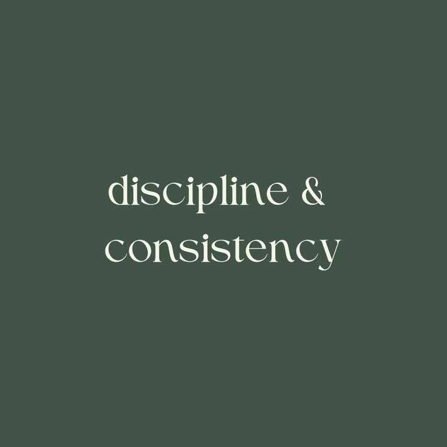

Weekly Workout Plan
This is a simple, flexible weekly structure you can follow. Adjust sets, reps, and exercises based on your equipment and energy.

| Day | Focus | Example |
|---|---|---|
| Monday | Lower Body Strength | Squats, lunges, glute bridges, calf raises |
| Tuesday | Upper Body Strength | Push-ups, rows, shoulder presses, bicep curls |
| Wednesday | Active Recovery | Walk, stretching, gentle yoga |
| Thursday | Full-Body Strength | Deadlifts, rows, squats, core work |
| Friday | Cardio + Core | Intervals (walk/jog), planks, dead bugs |
| Saturday | Fun Movement | Dancing, hiking, sports, long walk |
| Sunday | Rest | Stretch, relax, reset for the week |
Progress Tracker
Use this tracker to log your movement, nutrition, mood, and reflections. This is just for you — small wins still count.
No entries yet. Log your first win to see it here.
| Date | Movement | Nutrition | Mood | Reflection |
|---|